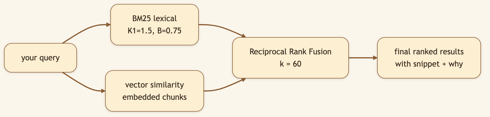
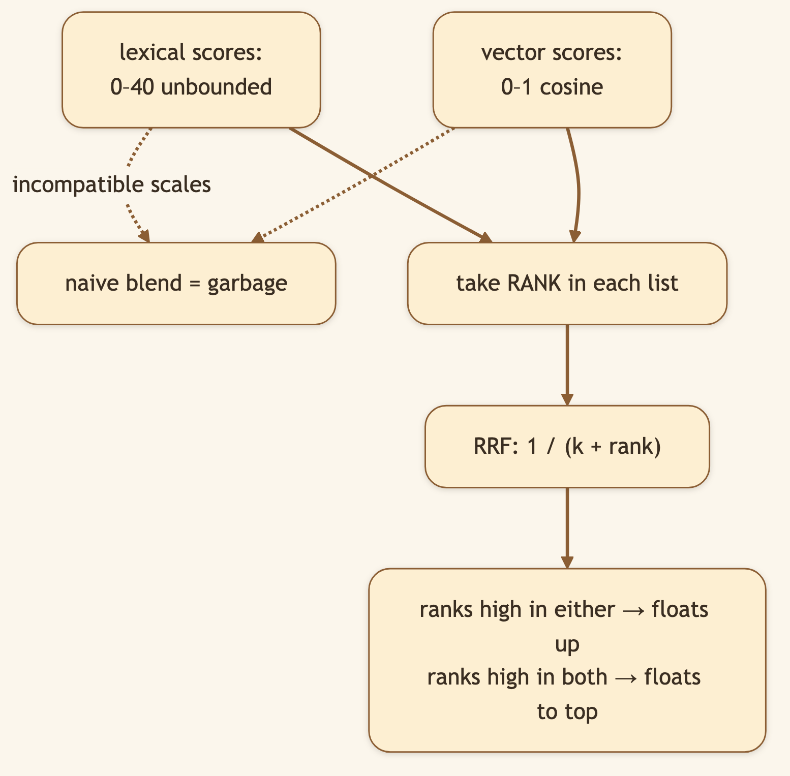
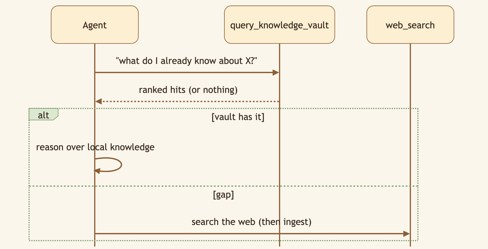

LinkedIn hook (use as the post's first line): "A knowledge base you can't search is just a graveyard. We combined keyword search and semantic search — and fused them — so recall doesn't depend on remembering the exact words." Audience: LinkedIn → Medium. Search/RAG engineers, researchers, anyone building a second brain.
A library is only as good as your ability to find the right book six months later — when you've forgotten exactly how you phrased things. That's the moment most knowledge bases fail you. CapyHome's vault search is built for that moment.
🖼️ [User add: image containing — a search bar with a fuzzy query like "staff freedom" returning a top result titled "Employee Autonomy." Annotate it: "different words, right answer." Good as a LinkedIn carousel slide.]
CapyHome runs both and merges them, so you get exact-term precision and meaning-based recall in one ranked list.


Lexical layer. Every compiled page is tokenized and scored with BM25 — the battle-tested ranking function behind classic search engines. Always on, always fast, no model required.
Vector layer (optional). When enabled, pages are split into overlapping chunks (default 1200 chars, 200 overlap) and embedded — via an OpenAI-compatible /embeddings endpoint, or a deterministic hash-based fallback if you'd rather make zero external calls. The query is embedded the same way and matched by similarity.
Fusion. Instead of forcing two incompatible score scales to agree, CapyHome uses Reciprocal Rank Fusion (hybrid_rrf_k = 60) — blending by rank, which is robust and needs no fragile normalization.
Every result returns a fused score, its category (source / entity / concept / synthesis / query), a snippet centered on the best-matching token, and — in hybrid mode — the individual lexical and vector ranks so you can see why it surfaced. Implementation: backend/src/control_plane/services/unified_vault_search.py.

🖼️ [User add: image containing — a real screenshot of vault search results in the UI, showing the score, category chips, and snippet. Capture from the running app's vault search box.]
[0:00–0:08] Hook: "Here's the test every knowledge base fails: can you find something when you've forgotten the exact words?"
[0:08–0:25] Screen: "I researched this topic months ago and called it 'employee autonomy.' Today I search for 'staff freedom' — totally different words." (type it.)
[0:25–0:40] Screen — results appear: "There it is, top result. That's keyword search and semantic search fused together. Keyword nails the exact terms; semantic catches the meaning."
[0:40–0:55] Close: "It's all local — you can even run the semantic layer with zero external calls. Open source, link below."
Search your vault using different words than you originally researched with. The right page still comes back.
Next: Plan Mode & Work Mode → — how CapyHome decides to think before it acts.